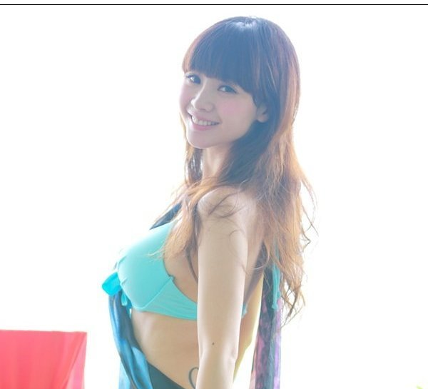
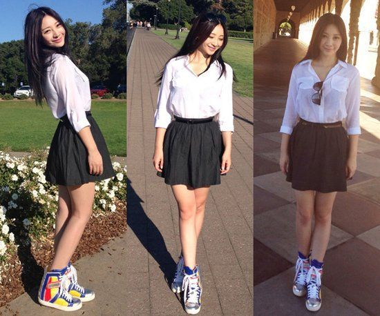
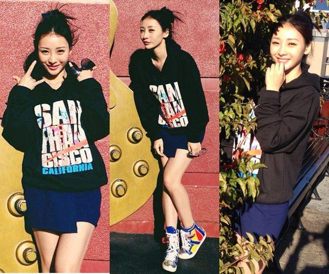
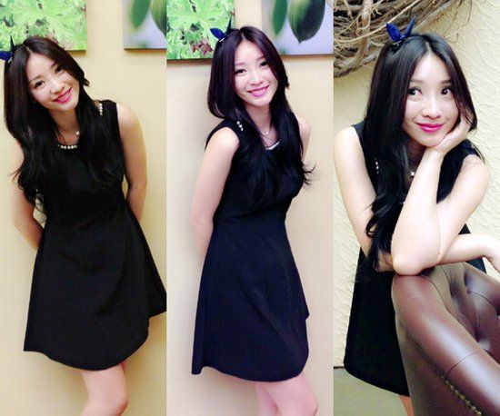
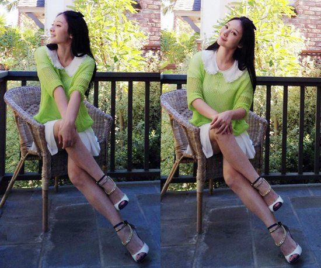
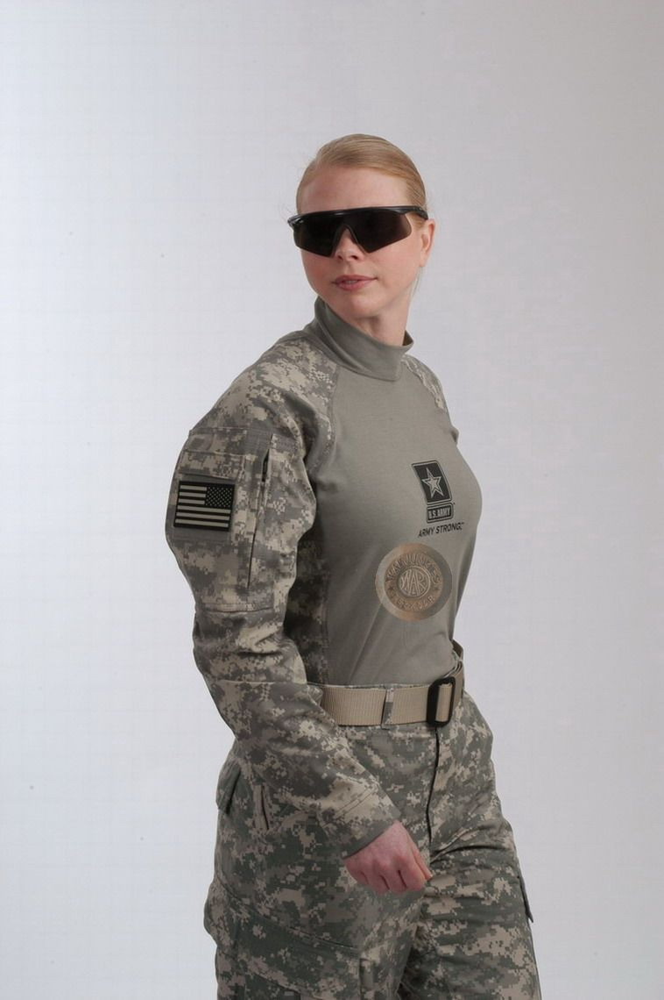

正文:
以下图片为自称E罩杯的柳岩(第一张是证明其有胸...), 目测大概到D
想要小清新个人来看胸大着实没有小胸小清新来的容易
但是路数还是一样的
多一些淡雅的绿色, 白色, 天蓝色然后不要太过紧身(紧身则可以用长发向前披的方式遮挡弥补)
一双素雅的帆布鞋或者运动鞋也能给小清新的味道或者学院风增色不少
如果穿跟很高的高跟鞋就会失去一些韵味
当然, 一些比较萌的发饰也很能增色~
我是以男生审美的角度说的... 可能还是不太了解着装搭配,
不过我觉得胸大的人还是可以驾驭小清新的
只是难度大
胸小的人则除了丰胸之外没有办法驾驭很多款型的衣服, 比如第一张图里的这种
评论有人质疑某人的胸围大小(我也质疑至少不是E, 但应该是有D)... 至于看起来会更小我觉得多和衣服有关
一张另外的衣服的照片

源自: 新华网：柳岩亲示出游装 小清新学生妹挨个秀
更新 2014.02.06
被赞的太多了... 作为一个知乎小白我简直不能忍受这么短的答案被赞超过十次啊
于是乎我必须得多扯点儿啥了..
我先知会一声.. 我纯扯理论, 没有任何实战经验, 第一我不是女的, 第二我没有女盆友... 我只是个有着还不算太偏的审美的直男, 或者说我就是个喜欢小清新的变态好了...
为了避免行文太过猥琐, 大胸妹纸下文均用BCG代替(Big Chested Girl)
根据题主给出的身高体重看得出题主不是一个因为肥胖才有BC的人, 也就是说!! 平胸妹纸看到你问这种问题都会露出如右表情 →_→ , 对对, BC绝对是一种好事儿, 不说别的, 到时候不用费劲跑香港跑国外买奶粉不是!!= = 好吧我扯远了
正文如下
- 首先我认为BCG穿衣服来表现学院英伦小清新, 突出腰身很重要啊!!原因如下
- 曲线美!!!! BCG最大的优势就在于此, 话不多说, 直接上图来验证这个答案
好吧...
对比
这可是真正的学院风有木有!! 但是腰身没有凸显是不是觉得很呆板凸显不出曲线美?而且连最大的优势, 也就是胸都看不出来, 同样的发型对比上面一张是不是就显得更没了女性美的味道反而不是一股学院风?
- 腰身能凸显一个人的身材比例
2. 在突出腰身的前提下, 那么上身有几点我觉得需要注意
- 首先如果要小清新的话就不能穿最普通的那种T恤了!!
首先是因为普通T恤基本上穿着都会把某部位的轮廓给完全框出来, 有个突出的坏作用来破坏小清新的氛围, 而且因为如果袖子和胸如果是一样齐的话很容易将人的整体造型突显在胸上而不是其他部位, 除非像柳岩一样用头发遮严实了... 当然效果也一般, 所以还是要避免最普通的那种T恤穿!!
这种叫啥袖子... (看图吧, 不了解术语啊), 虽然也有和某部位一样齐的特点但是却在一定程度上可以小清新一番
然后稍长的袖子也会比普通长短的那种好看一些(这次选个长相一般点儿的...)
更短一些也有比较好的效果, 参考柳岩完之后第一张图
当然长袖的感觉则更加灵活, 如图, 想象一下如果短到大臂中段会减分多少
当然也不代表长袖就一定保险, 我觉得其中还有很多门道, 太过宽松的长袖尤其也不可取
给个极端的图作参考, 就是又有普通短袖勾勒的某部位轮廓, 又有大宽松长袖的图
好吧... 有些人可能觉得上图是英伦小清新吧....
还有些内容到时候再更吧.....我感觉我太不专业了 T_T
扯得不对的地方还请各位指正
图片皆来自网络.... 来源太杂就不赘述源头了,
另附杉原杏璃是BCG的证明
杉原杏璃BCG证明